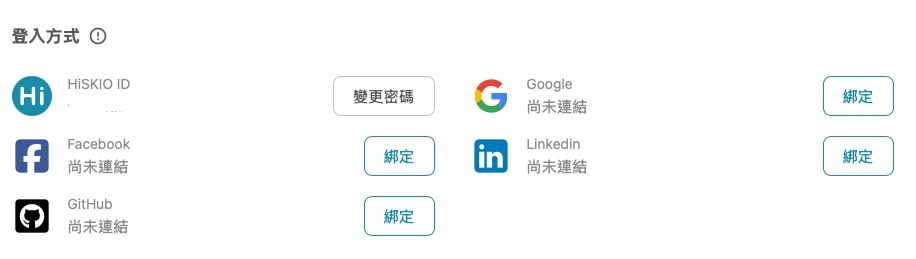
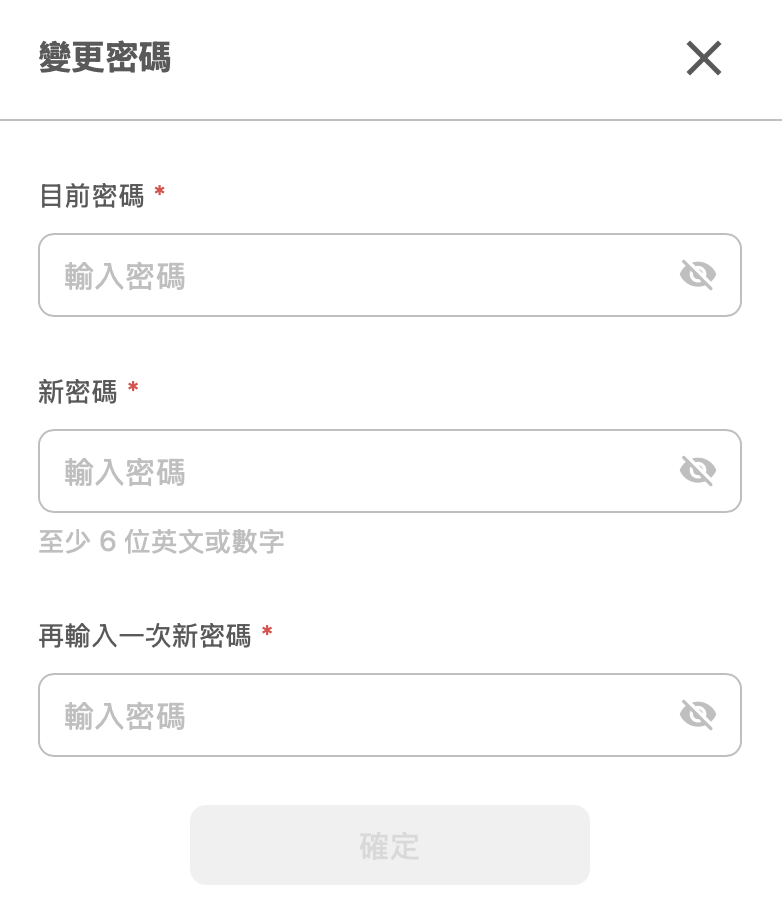
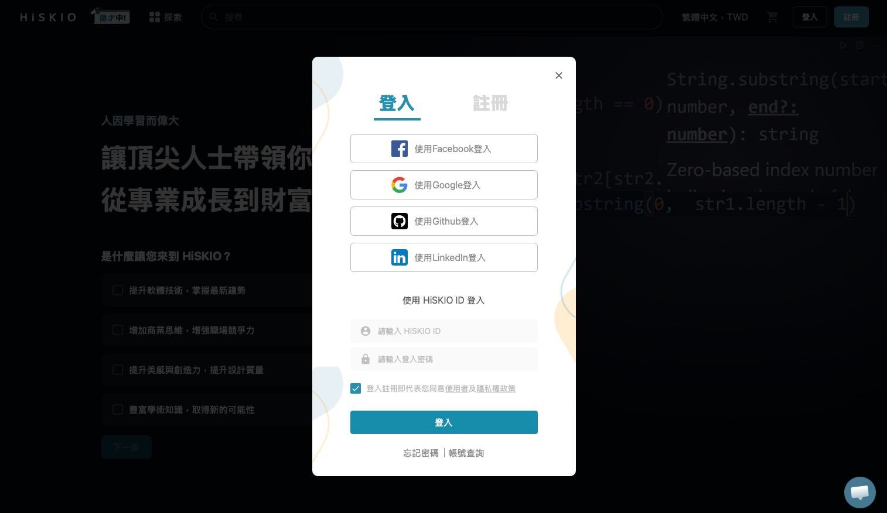
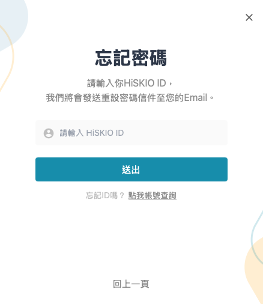
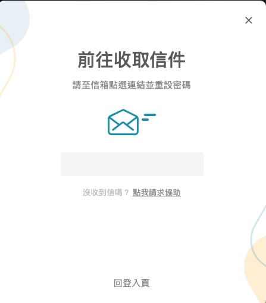
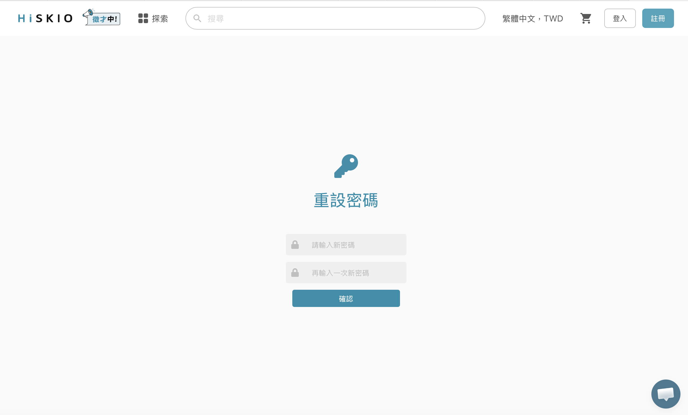

本篇說明 HiSKIO 帳號的密碼更改與重設流程。
更改密碼（你知道現在的密碼，想換新的）
操作流程
- 登入後，點選右上方個人頭像 →【帳戶設定】
- 點選左方選單的【登入方式】
- 在 HiSKIO ID 欄位按「變更密碼」

填入新密碼後，按下確認即完成更改。

忘記密碼（不知道現在的密碼，想重設）
當初註冊帳號的 Email 信箱將是你重設密碼的重要管道。
操作流程
1. 在登入頁面點選「忘記密碼」

請輸入你的 HiSKIO ID，我們將會發送重設密碼信件至你的 Email。

2. 收取「密碼重置信」
至你的信箱收取由「HISKIO 平台」寄出的信件。若沒收到，請檢查「垃圾郵件」或「其他分類」資料夾。

依照郵件指示重新設定一組新密碼。

按下按鈕後，即可使用新密碼登入你原本的帳號。
注意事項
- 若你之前並未設定 HiSKIO ID、是透過社群帳號登入，無法使用「忘記密碼」找回——因為這個帳號本來就沒有設定過 HiSKIO 密碼。請直接用原本的社群帳號登入；若社群登入失敗，請參考 登入方式與社群綁定 的「社群登入失敗的處理方式」
- 建議至少設定 2 種登入方式作為備援：若主要登入方式臨時出問題（例如忘記密碼、社群帳號被鎖），仍能用備用方式進入帳號繼續上課。設定方式請參考 登入方式與社群綁定 的「綁定多種登入方式」
- 找不到課程不一定是密碼問題，可能是登入到不同帳號了。請參考 帳號查詢與課程不見了排解 確認
想變更社群帳號的綁定？
社群登入方式（Facebook、Google、LinkedIn、GitHub）的密碼不由 HiSKIO 處理，請至該社群網站變更。
如果是想要綁定新的社群、取消綁定既有社群、設定 HiSKIO ID，請至【帳戶設定】→【登入方式】操作，相關流程請參考 登入方式與社群綁定。
仍無法解決？
請聯繫客服並提供：
- 註冊時使用的 Email
- 嘗試的操作步驟與遇到的錯誤訊息（如有）
更新時間： 07/05/2026